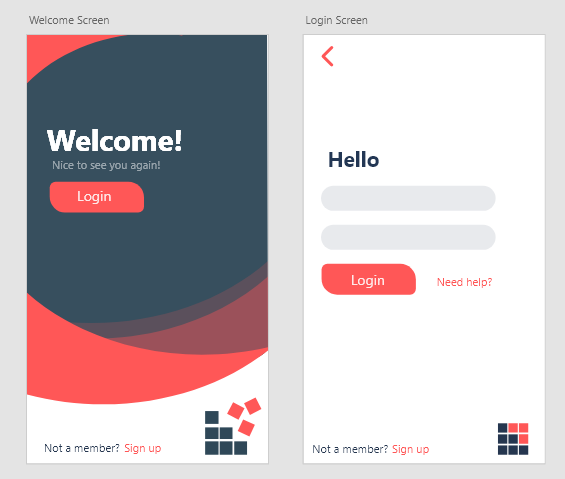
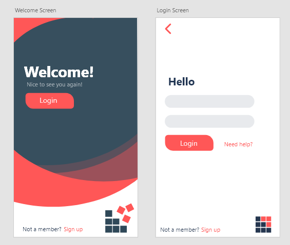
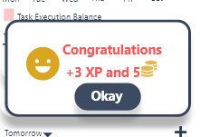
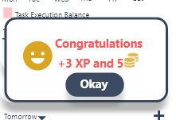
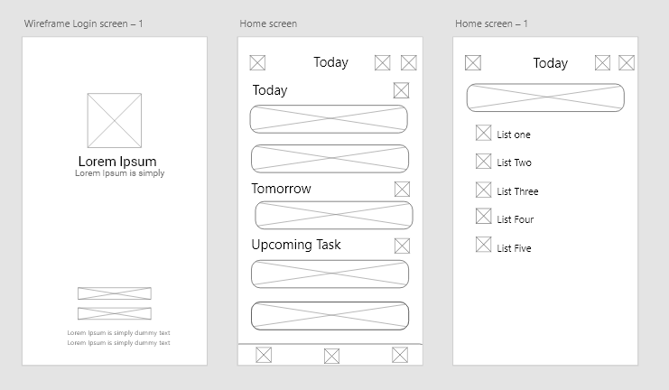
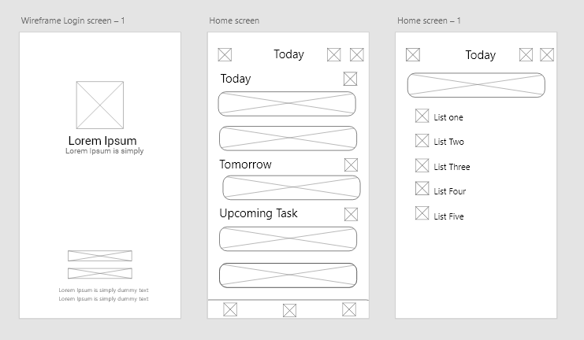
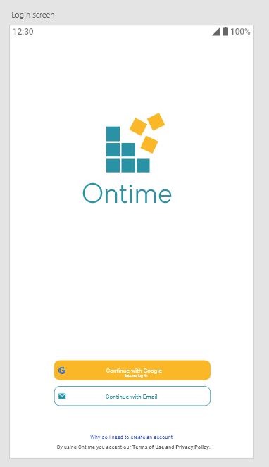
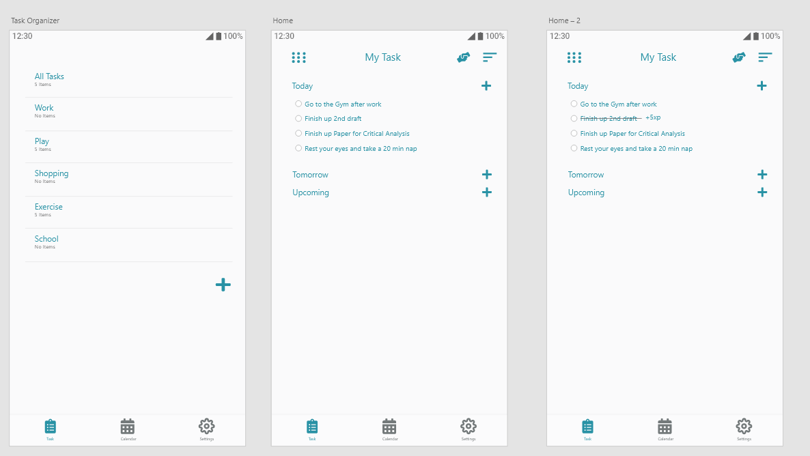
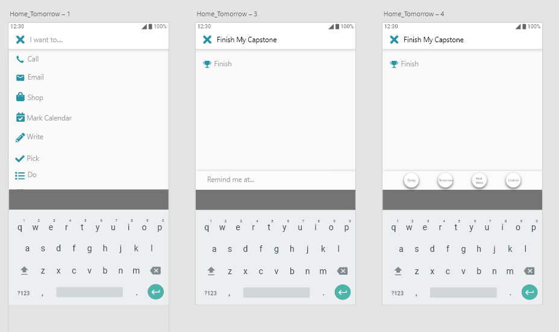

Ontime started with the idea of managing tasks and habits. I wanted to make something that would motivate me towards finishing my task and give me a reason to continue. I tried several apps on the play story but their busy UI made me uninstall it.
I started with doing sketches for the UI.
 I tried out different names, testing them out and checking if it isnt taken
I tried out different names, testing them out and checking if it isnt taken
 I finalized on the name Ontime. The idea behind this name was when using the app, you can be on time. Once i got the name down, i started to work on the logo
I finalized on the name Ontime. The idea behind this name was when using the app, you can be on time. Once i got the name down, i started to work on the logo
 Started with doing more sketches before moving on to the computer for UI
Started with doing more sketches before moving on to the computer for UI
 I started with Adobe XD as it was an software i was very familar with. I started out with picking the colours for the app and picked red and navy. Red was attractive and is associated with energy and power. Navy represented stability and confidence.

The first iteration was a challenge because it was only my second time designing an app. I had to look up tons of tutorials on youtube and looking at dozens of app for inspiration.
I started with Adobe XD as it was an software i was very familar with. I started out with picking the colours for the app and picked red and navy. Red was attractive and is associated with energy and power. Navy represented stability and confidence.

The first iteration was a challenge because it was only my second time designing an app. I had to look up tons of tutorials on youtube and looking at dozens of app for inspiration.
 I went off to creating the first few screens of the app and testing out the auto-animate tool on XD. I wanted a simple and minimalistic design while keeping the app colors.
I went off to creating the first few screens of the app and testing out the auto-animate tool on XD. I wanted a simple and minimalistic design while keeping the app colors.
 
Creating the progress screen was challenging as i wanted as much information while keeping it simple, but in the first iteration it was very busy so i had to delete and start over afterwards.

Creating the progress screen was challenging as i wanted as much information while keeping it simple, but in the first iteration it was very busy so i had to delete and start over afterwards.
 I went back to the drawing board, creating wireframes at first and testing out different UI styles.

I also went to recolor the logo as the red and glue was very bright and using it to keep the UI simple was tough. I wanted a color that would not attract attention, a color that was minimalistic
I went back to the drawing board, creating wireframes at first and testing out different UI styles.

I also went to recolor the logo as the red and glue was very bright and using it to keep the UI simple was tough. I wanted a color that would not attract attention, a color that was minimalistic
#FAB829
#2992A5
Yellow is the color of sunshine, hope, and happiness. This was the accent colors and the main colors for the dark mode i planned. The second color was a mix or blue and light sea green. Green represents freshness while blue represents loyalty, faith and confidence. It also represents calmness and is used to calm people down.
I looked at many different app login screens it was starting to come together.


The app was coming together, still missing some of the colours as it looked dull.
The adding task and habits screen started to look like the final version while missing a few things that required tweaking.

As i got the second iteration done, i could start on tweaking it and adding some other features and the accent colors. I added in a optional dark mode that the user could toggle.
Download the Adobe XD file